VisionFive2 板子教程
VisionFive2 开发板使用教程¶
我们会发以下材料，请核对清单：
- VisionFive 2 开发板
- nanoDAP 调试器
- 杜邦线若干（10根以上）
- 一张 32G SD卡
- 一个读卡器
请你自行准备一个手机充电器头，和 Type-C 线。
拆开包装后，请你将一下内容物交还到讲台：
- 写有 “昉·星光 VisionFive 2” 的纸壳
- 黑色静电袋
- 一包装有塑料螺丝脚垫的袋子
- （如有）一个用袋子装着的 USB 网卡
其余垃圾请课后自行处理。
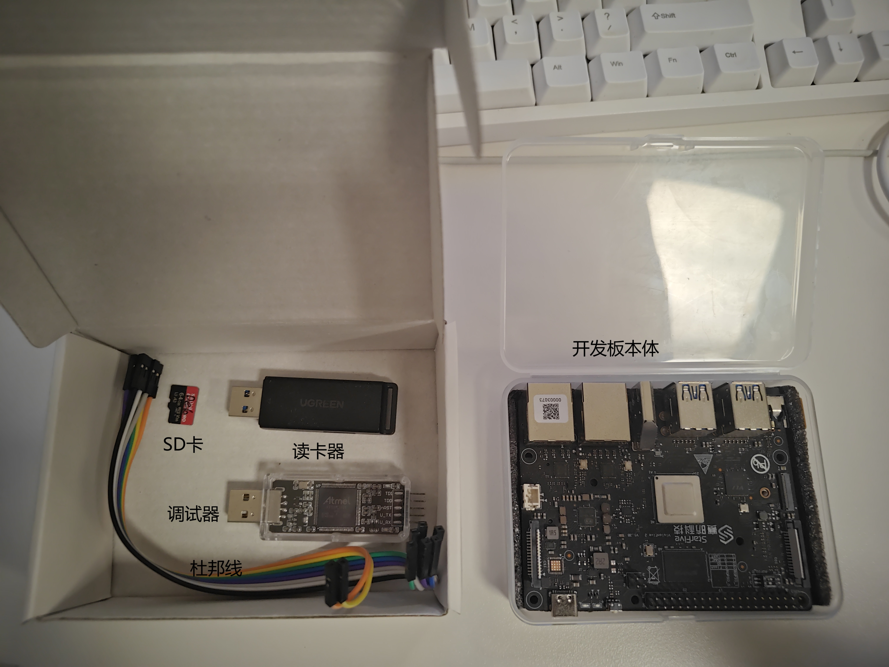
安装工具¶
在 VM 中：sudo apt install minicom 安装串口工具 minicom。
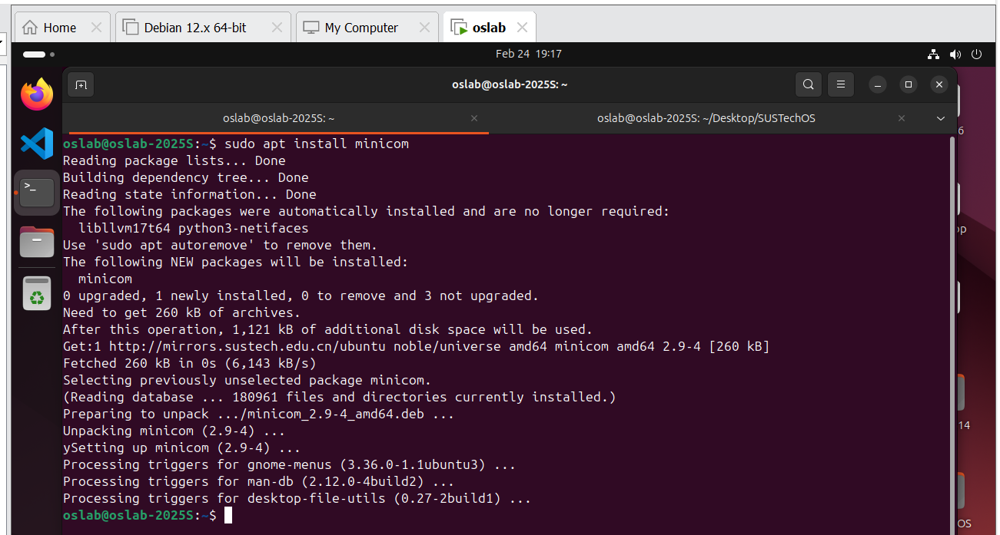
连接 UART 接口¶
使用 三根 杜邦线连接板子上的 GND, UART TX, UART RX 端口。
用右上角的 Pin 6, 8, 10。 注意不要连接到 5V Power 上面！！
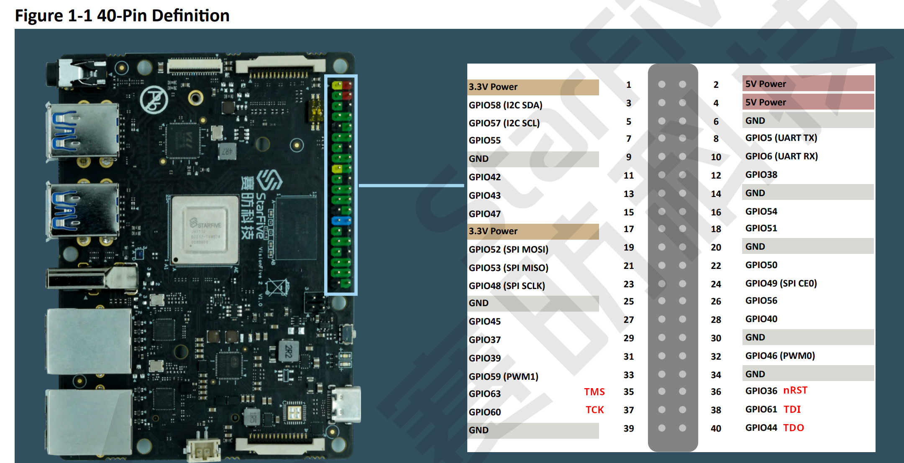
实拍图：
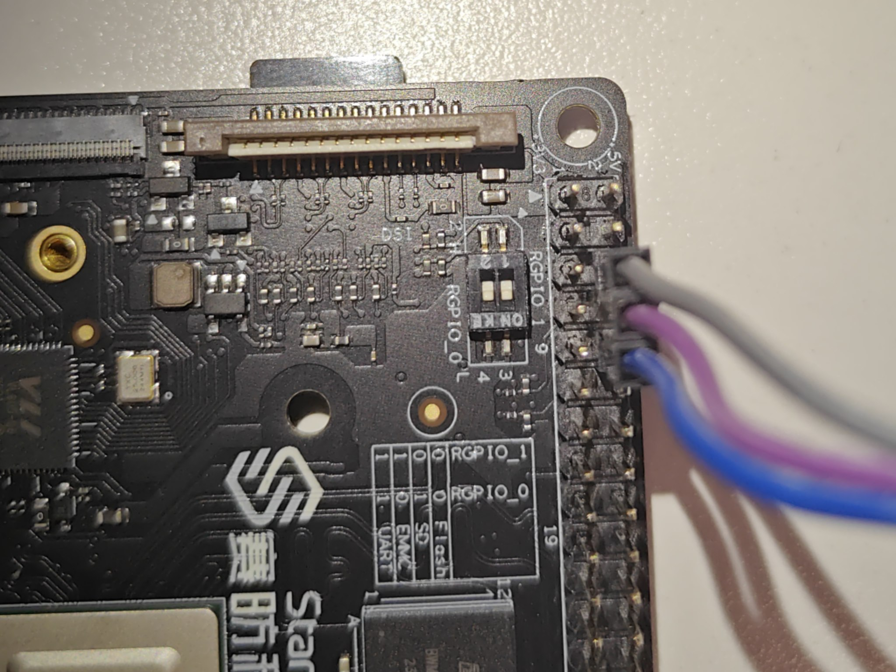
将板子上的 GND, UART TX, UART RX 分别连接到调试器上的 GND, U_RX, U_TX 上面，注意 UART 的 RX 和 TX 是交叉的，调试器正反面都有端口提示。
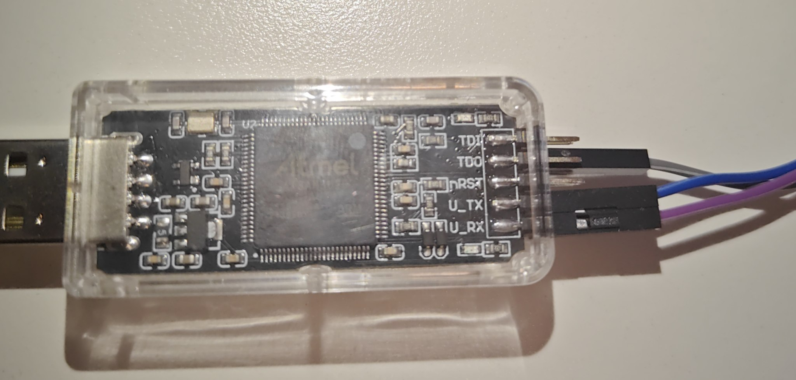
不要接调试器上面的 5V 和 3V3 ！！！！ 也不要试图通过调试器给 VisionFive2 板子供电！！
连接到 VM¶
启动 VMware 中的虚拟机。
将调试器插入电脑USB口（macOS 用户请自备 Type-C 到 USB-A 转接器），你应该会收到以下提示。
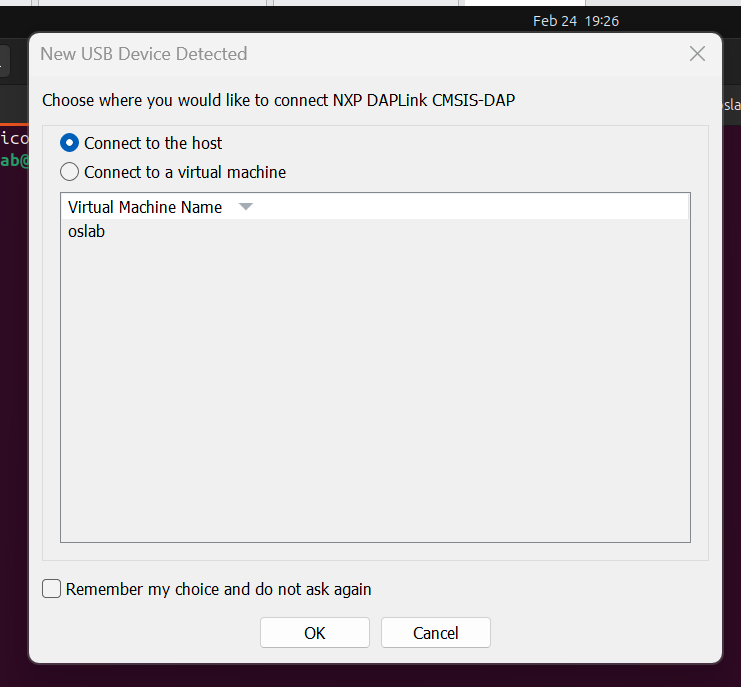
选择 Conenct to a virtual machine。将调试器连接至虚拟机中。如果你没有看到这个窗口或错过了，你可以在菜单栏中选择 VM -> Removable Devices -> NXP DAPLink CMSIS-DAP -> Connect (Disconnect from Host)。
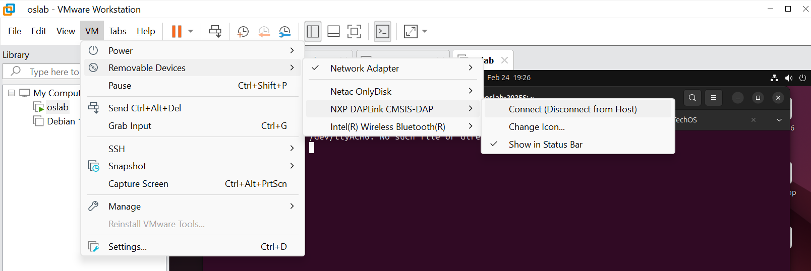
在虚拟机的终端中，执行 lsusb，你应该能看到一项 "NXP ARM mbed" 的项目，如果看不到，请报告助教。
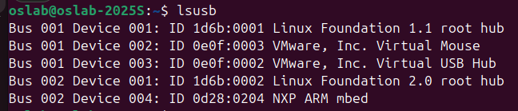
在终端中执行：ls /dev/tty* 你应该能看到一项为 /dev/ttyACM0 ，这就是串口设备。如果看不到，请报告助教。
在终端中执行：sudo usermod -aG dialout oslab，输入密码确认后重启虚拟机。
重启后，在终端中执行：id，你应该会看到 gid 后面有一项 dialout。
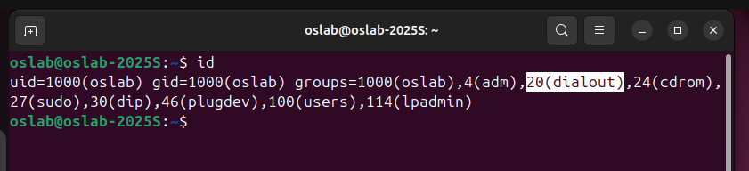
在终端中执行 sudo minicom -s 设置 minicom 工具，你会进入如下界面，使用上下左右、ESC、Enter进行移动。
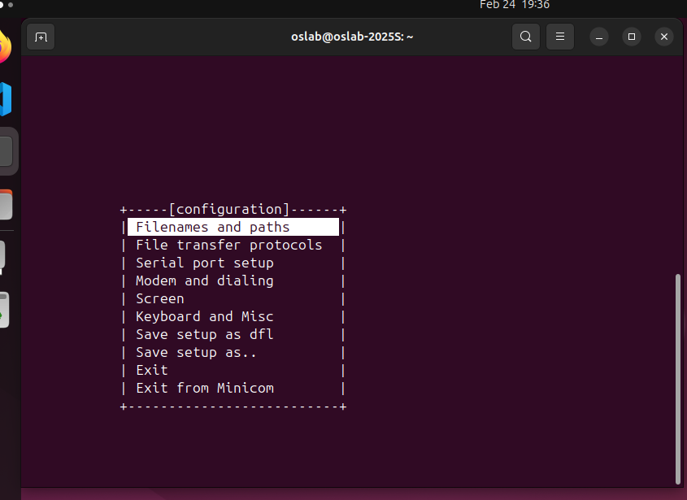
进入 Serial port setup，按 A 编辑 Serial Device 这一项，将其改为 /dev/ttyACM0
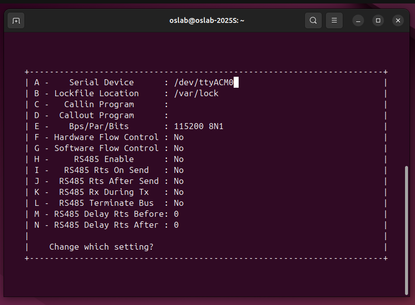
回车确认两次，回到 configuration 界面，选择 Save setup as dfl 回车确认，你应该能看到 Configuration Saved 提示。
选择 Exit 退出配置页面，进入 minicom 终端，使用 Ctrl A + X 退出 minicom。
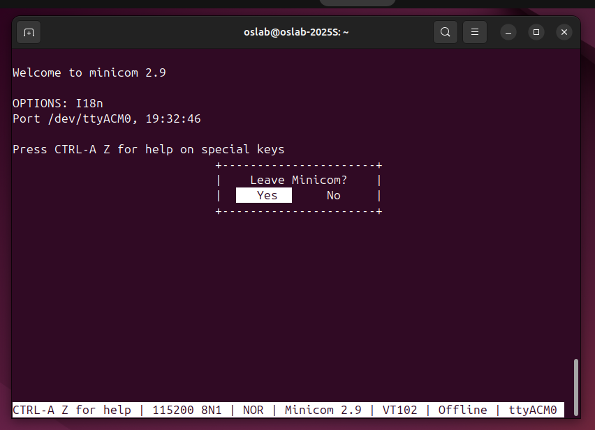
使用普通用户 oslab 执行 minicom，你应该能正常打开串口。
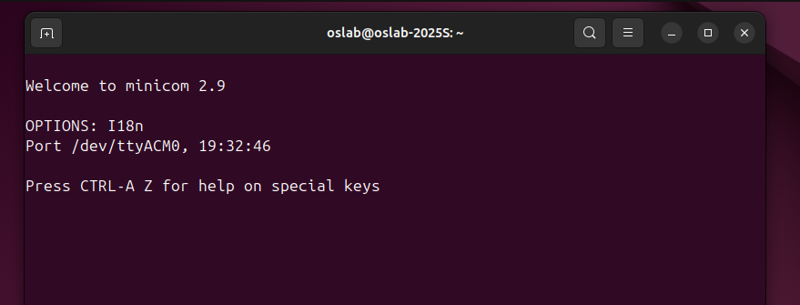
板子上电¶
在打开 minicom 的情况下，用 Type-C 口给板子供电。
你应该能看到板子 Type-C 接口旁边有一个红色 LED 亮起，同时串口界面有显示、调试器上闪烁绿灯：
U-Boot SPL 2025.01-dirty (Feb 21 2025 - 21:15:06 +0800)
DDR version: dc2e84f0.
Trying to boot from SPI
OpenSBI v1.5.1
____ _____ ____ _____
/ __ \ / ____| _ \_ _|
| | | |_ __ ___ _ __ | (___ | |_) || |
| | | | '_ \ / _ \ '_ \ \___ \| _ < | |
| |__| | |_) | __/ | | |____) | |_) || |_
\____/| .__/ \___|_| |_|_____/|____/_____|
| |
|_|
Platform Name : StarFive VisionFive 2 v1.3B
Platform Features : medeleg
...
U-Boot 2025.01-dirty (Feb 21 2025 - 21:15:06 +0800)
CPU: sifive,u74-mc
Model: StarFive VisionFive 2 v1.3B
DRAM: 4 GiB
Core: 136 devices, 26 uclasses, devicetree: board
WDT: Not starting watchdog@13070000
MMC: mmc@16010000: 0, mmc@16020000: 1
StarFive EEPROM format v2
--------EEPROM INFO--------
Vendor : StarFive Technology Co., Ltd.
Product full SN: VF7110B1-2253-D004E000-40000798
data version: 0x2
PCB revision: 0xb2
BOM revision: A
Ethernet MAC0 address: 6c:cf:39:00:6c:bc
Ethernet MAC1 address: 6c:cf:39:00:6c:bd
--------EEPROM INFO--------
..
StarFive #
可以看到 OpenSBI 加载和 U-Boot 加载，最后有一个 StarFive # 的命令提示符，我们将其称为 uboot 终端。
.
运行 xv6 内核¶
在 minicom 下，板子启动完成后，出现 uboot 终端
使用另一个终端窗口，cd 到内核代码目录下，make 编译内核，然后 cd 到 build 目录下：
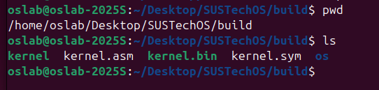
执行 pwd 以获取当前目录的完整路径，右键拷贝。
在 uboot 终端下执行：loadx：
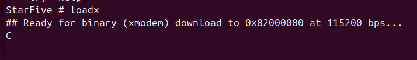
按 Ctrl A + S，打开 [Upload] 提示框，
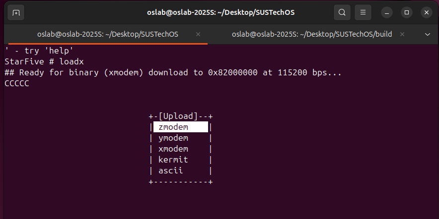
选择 xmodem，切换到 [Goto]，然后回车，在 Goto directory 下面粘贴我们之前复制的 build 目录的完整路径，回车确认。
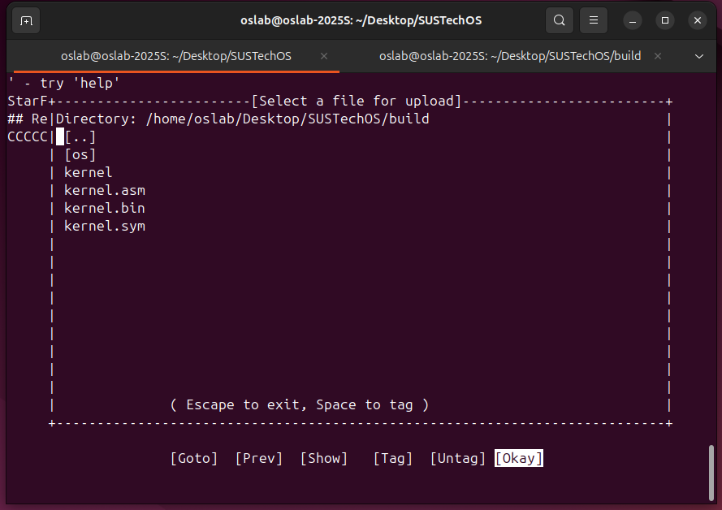
左右移动光标到 [Okay]，上下移动光标到 kernel 这一项，然后空格选中，
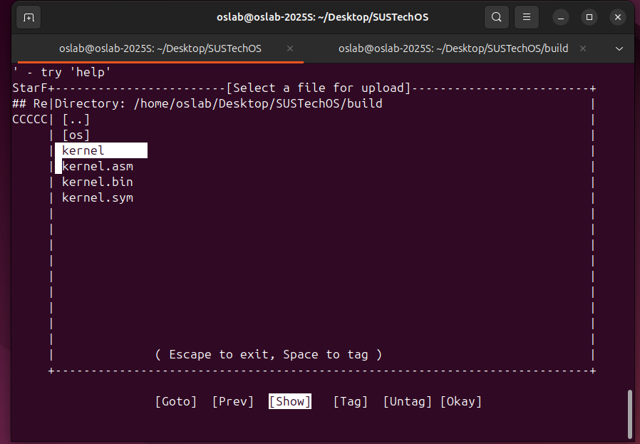
然后回车确认，开始上传。
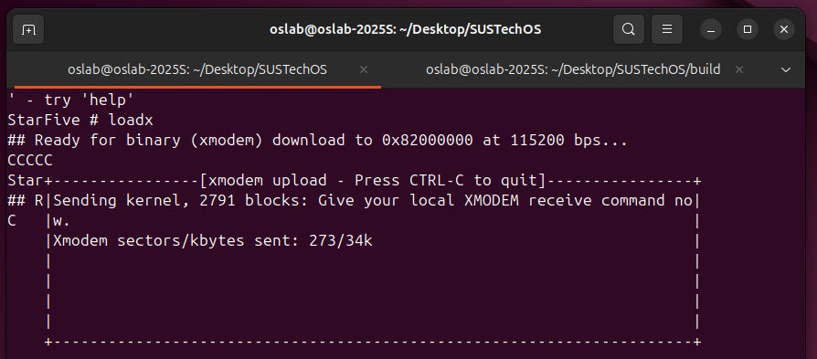
上传结束后，[xmodem upload] 窗口消失，uboot终端下会提示 ##Total Size 和 ## Start Addr。
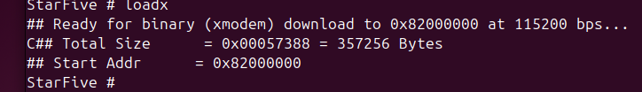
执行命令 bootelf -p，然后执行 go 0x80200000
uboot 终端应该会提示 ## Starting application at 0x80200000 ...，然后跳转到我们的内核，最终 sh 启动成功。
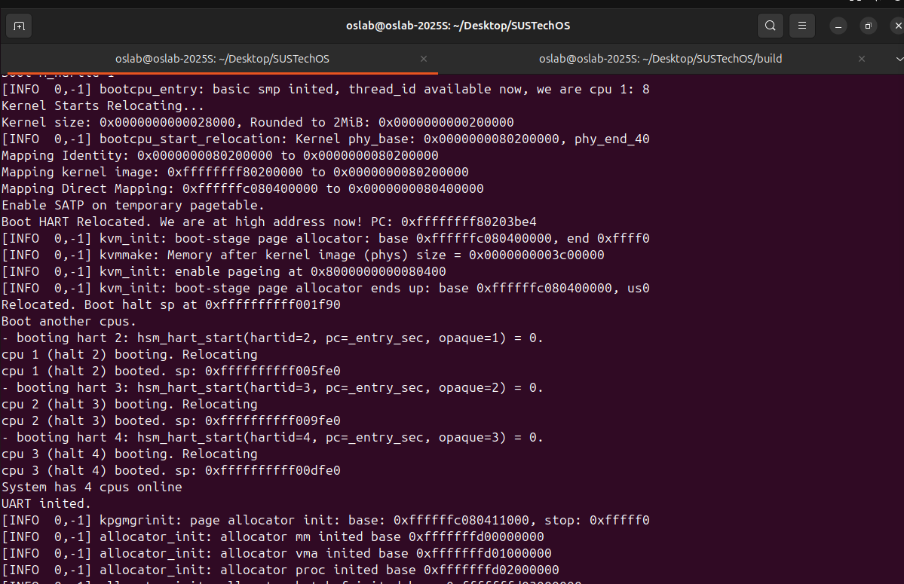